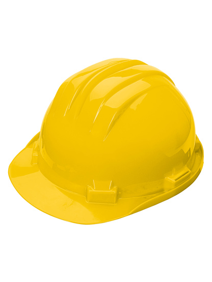
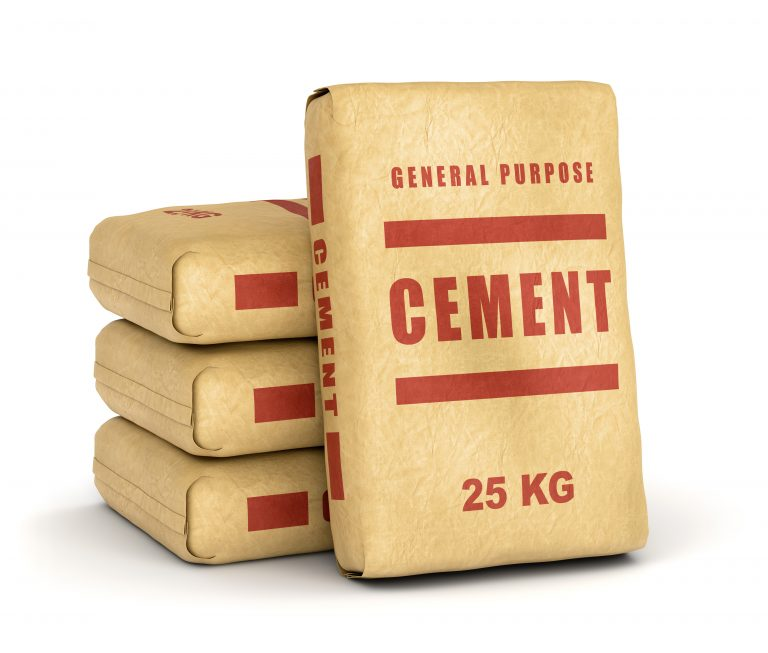
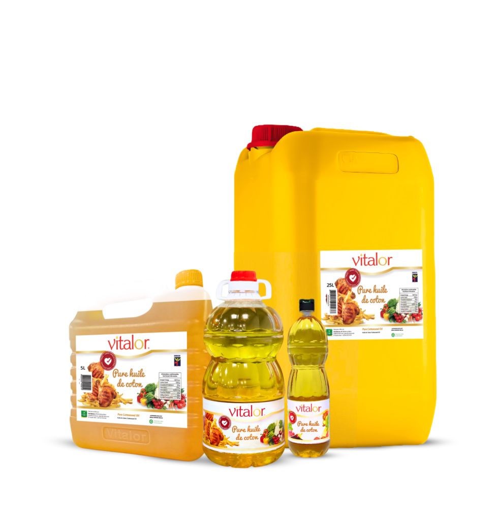
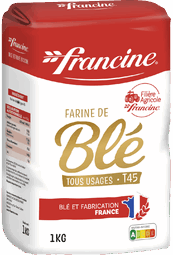

Suivi des mouvements
Chaque operation conserve le produit, le type de mouvement, la quantite, la date et le stock restant.
 DD Service
DD Service
Plateforme academique de gestion
DD Service centralise les mouvements d'entree et de sortie, suit les alertes de stock et produit des indicateurs utiles a la decision.
Contexte du projet
Le projet repond au besoin de mieux controler les stocks dans une petite structure commerciale : connaitre les quantites disponibles, tracer les mouvements et detecter rapidement les ruptures.
Chaque operation conserve le produit, le type de mouvement, la quantite, la date et le stock restant.
Les produits sous le seuil critique sont identifies pour faciliter le reapprovisionnement.
Les tableaux et graphiques donnent une lecture rapide de l'etat du magasin.
Exemples de produits

Equipements de protection necessaires au travail en securite.

Produit de construction dont le suivi evite les ruptures de chantier.

Produit de consommation suivi par quantite disponible et mouvements.

Matiere premiere dont la disponibilite influence les ventes quotidiennes.
Zone d'etude
Le cas d'etude est situe a Lubumbashi, en Republique Democratique du Congo.